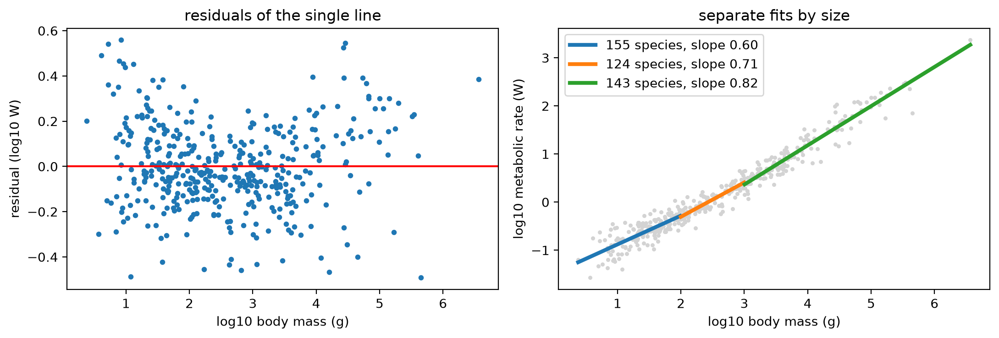

Evidence · Part 4
Positive at both ends, negative in the middle. Fitted separately, small mammals give 0.60, medium 0.71 and large 0.82: the exponent you measure depends on which animals are in the table.